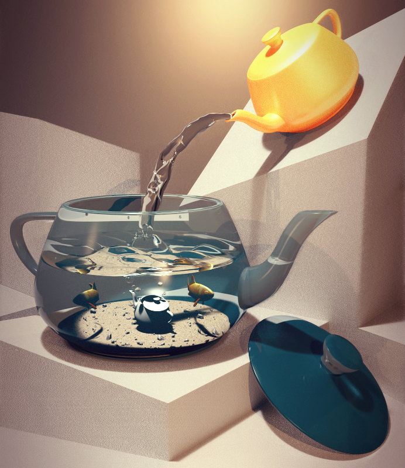

CS6620 - RayTracing for Graphics
Venkata Kushal Ponnam
Teapot Rendering Competition
Render details of Teapot Acquarium scene
- Render time : Image was split into three parts and rendered on three computers with approx 3 hours of render time on each.
- Adaptive sampling from 128 to 256 samples per pixel.
- Soft Shadows and Glossy Reflections.
- Monte Carlo Global Illumination.
Special Thanks to Victor Castro for modeling all the objects and helping me in setting up the scene

Hardware : Core i7 - 2630QM (2.00GH)
Ram : 6GB